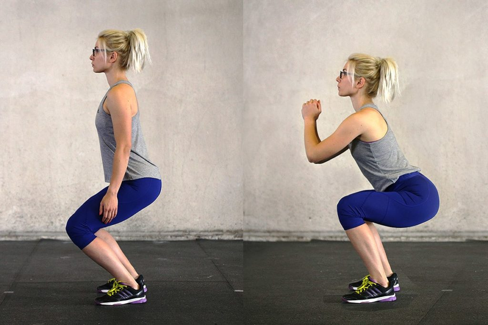

<style>
  @import url('https://fonts.googleapis.com/css2?family=Mitr&display=swap');
  @import url('https://fonts.googleapis.com/css2?family=Roboto+Flex:opsz@8..144&display=swap');
</style>

<ion-header>
  <ion-toolbar>
    <ion-title style="font-family: 'Mitr', sans-serif;font-size: 1.2em;text-align:center">
      <button [routerLink]="['/tabs/tab2']" ion-button icon-only
        style="border-radius: 50px;font-size: 27px; position: absolute; left: 10px;">
        <ion-icon name="chevron-back-sharp" size="small"></ion-icon>
      </button>
      Historial
    </ion-title>
  </ion-toolbar>
</ion-header>

<ion-content>
  
  <h3 style="font-weight: bold;font-family: 'Mitr', sans-serif; color: white; margin-left:0.5em">Rutina básica en casa
  </h3>
  <hr style="margin-left:0.5em">
  <p style="font-family: 'Roboto Flex', sans-serif;margin-left:0.5em">Objetivo: Mantener línea</p>
  <p style="font-family: 'Roboto Flex', sans-serif;margin-left:0.5em">Duración: 45 minutos</p>
  <p style="font-family: 'Roboto Flex', sans-serif;margin-left:0.5em">Equipamiento: <span
      style="color: rgb(0, 255, 4)">NO</span></p>
  <p style="font-family: 'Roboto Flex', sans-serif;margin-left:0.5em">Lugar: Casa</p>
  <hr style="margin-left:0.5em">

  <div>
    <h4 style="font-weight: bold;font-family: 'Mitr', sans-serif;color: white; margin-left:0.5em">Calentamiento</h4>
    <p style="font-weight: bold;font-family: 'Mitr', sans-serif;color: white; margin-left:0.5em">Estiramientos generales
    </p>
    <p style="font-family: 'Roboto Flex', sans-serif;margin-left:0.5em;margin-right:0.5em">Calentaremos de forma
      progresiva todos los
      músculos y articulaciones, ya que estamos al inicio del entrenamiento y estamos frios. Movimiento articular
      generalizado, realizando una respiración continua y controlada.</p>
  </div>

  <div>
    <h4 style="font-weight: bold;font-family: 'Mitr', sans-serif;color: white; margin-left:0.5em">1. Ejercicio</h4>
    <p style="font-weight: bold;font-family: 'Mitr', sans-serif;color: white; margin-left:0.5em; font-style: oblique;">
    Flexiones</p>
    <p style="font-family: 'Roboto Flex', sans-serif;margin-left:0.5em;margin-right:0.5em">Las flexiones o push ups son
      un tipo de ejercicio funcional muy completo en el que se activan músculos de todo el cuerpo, de ahí su
      efectividad. Trabaja pecho, tríceps, deltoides, fortalece el core y los estabilizadores de la espalda. Incluso
      puede llegar a trabajar glúteos y cuádriceps.</p>
    
    
    <p style="font-family: 'Roboto Flex', sans-serif;margin-left:0.5em"><span
        style="font-style: oblique; text-decoration: underline;">Series:</span> 4 series de 10/15 repeticiones</p>
    <p style="font-family: 'Roboto Flex', sans-serif;margin-left:0.5em"><span
        style="font-style: oblique; text-decoration: underline;">Descanso:</span> 1 minuto entre serie</p>
  </div>

  <div>
    <h4 style="font-weight: bold;font-family: 'Mitr', sans-serif;color: white; margin-left:0.5em">2. Ejercicio</h4>
    <p style="font-weight: bold;font-family: 'Mitr', sans-serif;color: white; margin-left:0.5em; font-style: oblique;">
      Sentadillas
    </p>
    <p style="font-family: 'Roboto Flex', sans-serif;margin-left:0.5em;margin-right:0.5em">La sentadilla o cuclilla es
      uno de los ejercicios básicos del entrenamiento de fuerza. Trabaja directamente los músculos de muslo, músculos de
      la cadera y glúteos, y fortalece los huesos, ligamentos y tendones de piernas y caderas.</p>
    
    
    <p style="font-family: 'Roboto Flex', sans-serif;margin-left:0.5em"><span
        style="font-style: oblique; text-decoration: underline;">Series:</span> 4 series de 10 repeticiones</p>
    <p style="font-family: 'Roboto Flex', sans-serif;margin-left:0.5em"><span
        style="font-style: oblique; text-decoration: underline;">Descanso:</span> 1 minuto entre serie</p>
  </div>

  <div>
    <h4 style="font-weight: bold;font-family: 'Mitr', sans-serif;color: white; margin-left:0.5em">3. Ejercicio</h4>
    <p style="font-weight: bold;font-family: 'Mitr', sans-serif;color: white; margin-left:0.5em; font-style: oblique;">
      Jumping Jacks
    </p>
    <p style="font-family: 'Roboto Flex', sans-serif;margin-left:0.5em;margin-right:0.5em">El trabajo de los jumping
      jacks se centra en las piernas, en particular en los gemelos. Pero también ejercita los músculos medianos y
      menores de los glúteos, que forman el grupo de los abductores, y los músculos internos de los muslos, también
      llamados aductores.</p>
    
    
    <p style="font-family: 'Roboto Flex', sans-serif;margin-left:0.5em"><span
        style="font-style: oblique; text-decoration: underline;">Series:</span> 4 series de 15 repeticiones</p>
    <p style="font-family: 'Roboto Flex', sans-serif;margin-left:0.5em"><span
        style="font-style: oblique; text-decoration: underline;">Descanso:</span> 45 minuto entre serie</p>
  </div>

  <div>
    <h4 style="font-weight: bold;font-family: 'Mitr', sans-serif;color: white; margin-left:0.5em">4. Ejercicio</h4>
    <p style="font-weight: bold;font-family: 'Mitr', sans-serif;color: white; margin-left:0.5em; font-style: oblique;">
      Triceps con silla
    </p>
    <p style="font-family: 'Roboto Flex', sans-serif;margin-left:0.5em;margin-right:0.5em">Los fondos de tríceps es un
      ejercicio idóneo para aumentar la masa muscular de los brazos, concretamente del tríceps. Este movimiento se puede
      realizar de dos modos; con peso muerto o apoyado en el suelo.</p>
    
    
    <p style="font-family: 'Roboto Flex', sans-serif;margin-left:0.5em"><span
        style="font-style: oblique; text-decoration: underline;">Series:</span> 4 series de 8/10 repeticiones</p>
    <p style="font-family: 'Roboto Flex', sans-serif;margin-left:0.5em"><span
        style="font-style: oblique; text-decoration: underline;">Descanso:</span> 1 minuto entre serie</p>
  </div>

</ion-content>

<ion-tab-bar slot="bottom">
  <ion-tab-button tab="tab1" [routerLink]="['/tabs/tab1']">
    <ion-icon name="barbell"></ion-icon>
  </ion-tab-button>

  <ion-tab-button tab="tab2" [routerLink]="['/tabs/tab2']">
    <ion-icon style="color: white;" name="stats-chart"></ion-icon>
  </ion-tab-button>

  <ion-tab-button tab="tab3" [routerLink]="['/tabs/tab3']">
    <ion-icon name="book"></ion-icon>
  </ion-tab-button>

  <ion-tab-button tab="tab4" [routerLink]="['/tabs/tab4']">
    <ion-icon name="person"></ion-icon>
  </ion-tab-button>